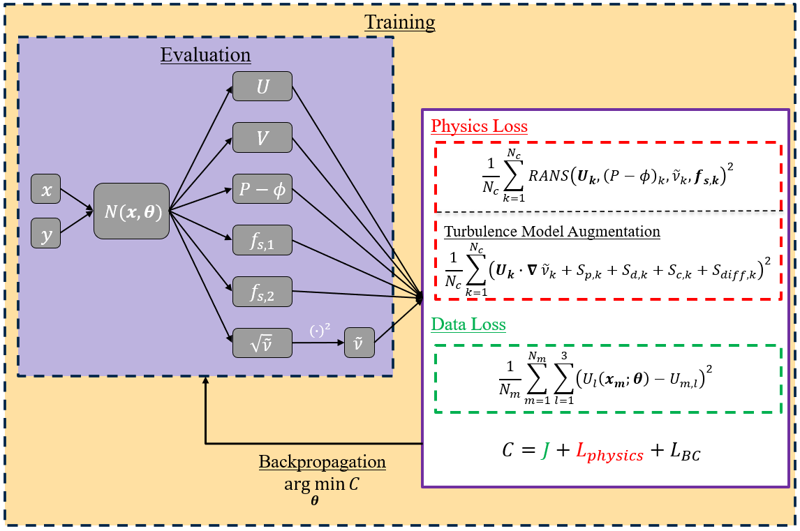

Welcome to PINN_SA’s documentation!¶
This directory presents an implementation of DeepXDE package which allows changing problem setup from a single config file. This allows the case, hyperparameters and other parameters to be changed with a single file. This code was used for the work XXXX, which solves the inverse problem for the mean flow RANS equations.
Documentation: xxx
Features¶
This code has the ability to chnage many parameters such as: - changing architecture (nodes and layers), activation functions and learning rate - changing the weights of individual loss components - changing the PDE for the problem - changing the individual case - changing number of iterations and convergence criteria
Check out the Usage section for further information, including how to install the project.
User Guide¶
Installation Guide:
Examples¶
Example Cases: